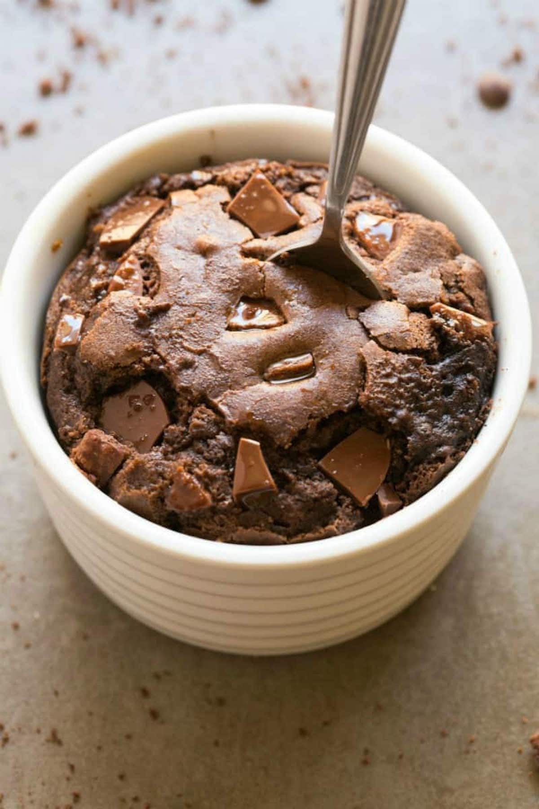

Melt the butter in a microwave-safe mug.
Stir in the granulated sugar, brown sugar, vanilla extract, and salt.
Add the egg yolk and mix well.
Stir in the flour and cocoa powder until just combined.
Fold in chocolate chips if using.
Microwave on high for 45–60 seconds, until set but still fudgy.
Let cool slightly (I add more chocolate chips) and enjoy!

Back to Home Page